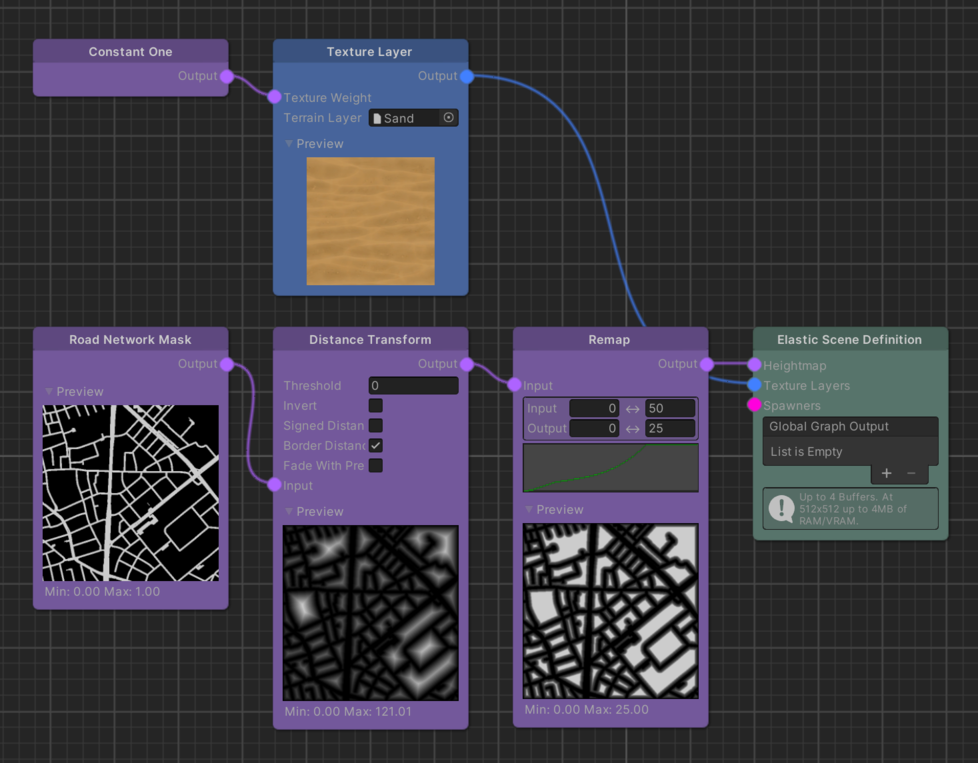
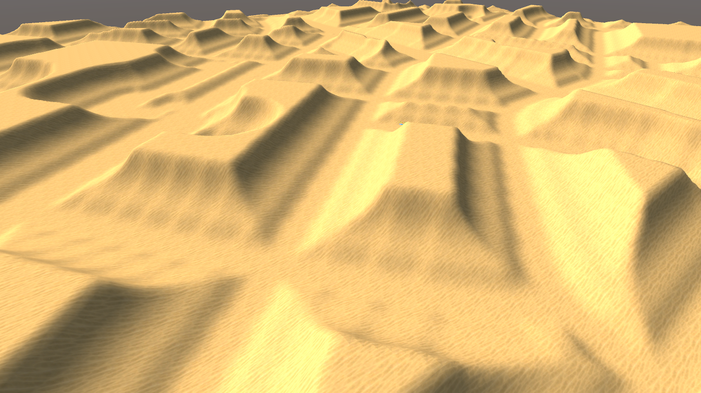

Remap - The Multi-Purpose Tool
The Remap node is one of the most versatile Map Modifiers that, with some practice, will soon evolve to your Swiss Army Knife in terms of elastic terrain modelling. It is used to bring an input value from one range to another while keeping it's relative position inside these ranges. By default, this means that if your input value is 80% of the size of your input range then, after the remap, it will be 80% of the size of the output range.
Note
It is possible to change this behavior utilizing the Curve parameter.

The same behavior translates one-by-one to Maps and is executed for each each pixel value of the input Map.
Important
Values of the input Map are clamped to the Input range parameter.
Basic Implementation
The concept of value remapping can be confusing in certain scenarios. It might be helpful to go through the underlying math to better understand what actually happens to the input values.
The basic remapping algorithm is as follows:
outputMapValue =
outputRangeStart
+ (outputRangeEnd - outputRangeStart)
* ((inputMapValue - inputRangeStart) / (inputRangeEnd - inputRangeStart))
Curve Modulation
The Remap node is using an additional Curve parameter enabling the user to customize the distribution of the input values inside the output range. This parameter is what makes this node so useful.
For elastic terrain modelling it is often required to form shapes over a certain distance away from the road the player
is driving on. Imagine a case where you want to create plateau-like shapes across your environment.
This is a perfect use case for the Remap node:

What is happening here is that by using the Distance Transform of the Road Network Mask as input, we can remap the distances away from the road to certain heights of our plateau-like shape. By setting the Input range to 0..50 and the output range to 0..25, we basically say that over a distance of 50 meters away from the road we want to get height values ranging from 0 to 25. Therefore, the Curve parameter defines how these distances map from the input range to the output range, ultimately driving the plateau shape.

Note
The Curve's axes values are normalized to a 0..1 range. If this was not the case, the x-axis would show the input range and the y-axis the output range.
Implementation Wrap Up
On a code level the curve is doing nothing more than evaluating the values of the second part of the multiplcation, clamped between 0 and 1, that was presented above already. The ouput value of the curve is then used as alpha input for a linear interpolation between Output range's start and end value.
To reflect the additional Curve parameter in the pseudo code implementation:
curveInput = clamp01((inputMapValue - inputRangeStart) / (inputRangeEnd - inputRangeStart));
curveOutput = clamp01(Curve(curveInput));
outputMapValue = lerp(outputRangeStart, outputRangeEnd, curveOutput);
Further Reading
- Remap node - Node detail page.
- The simple yet powerful math we don't talk about! - A lovely take on lerp, inverse lerp and remap by Freya Holmér.